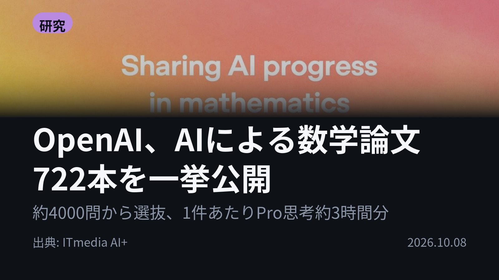
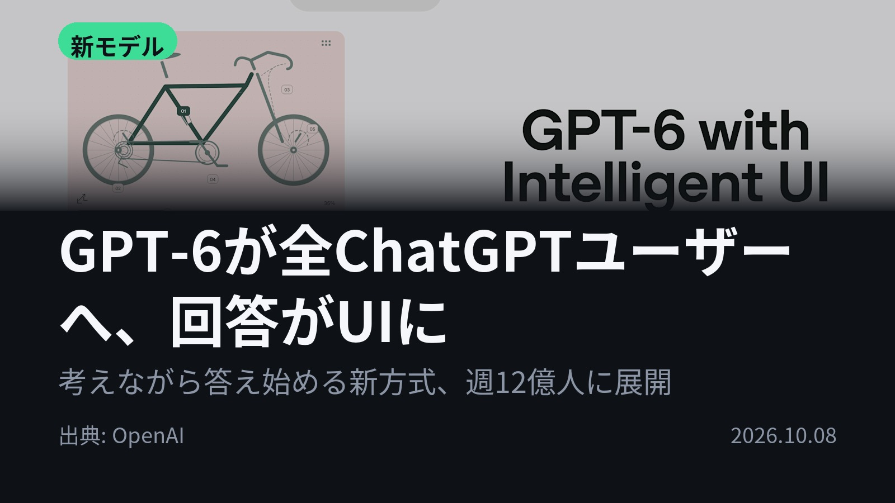
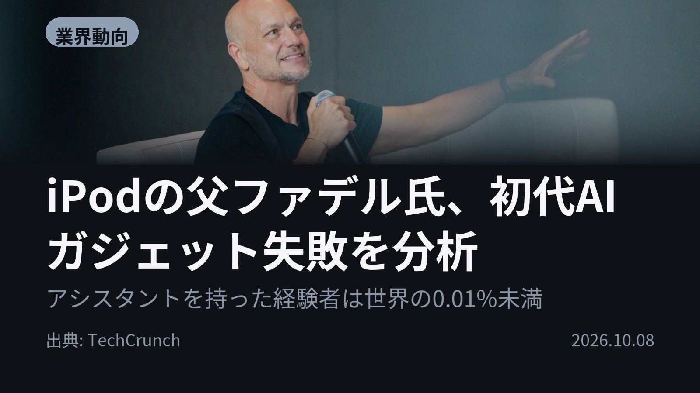
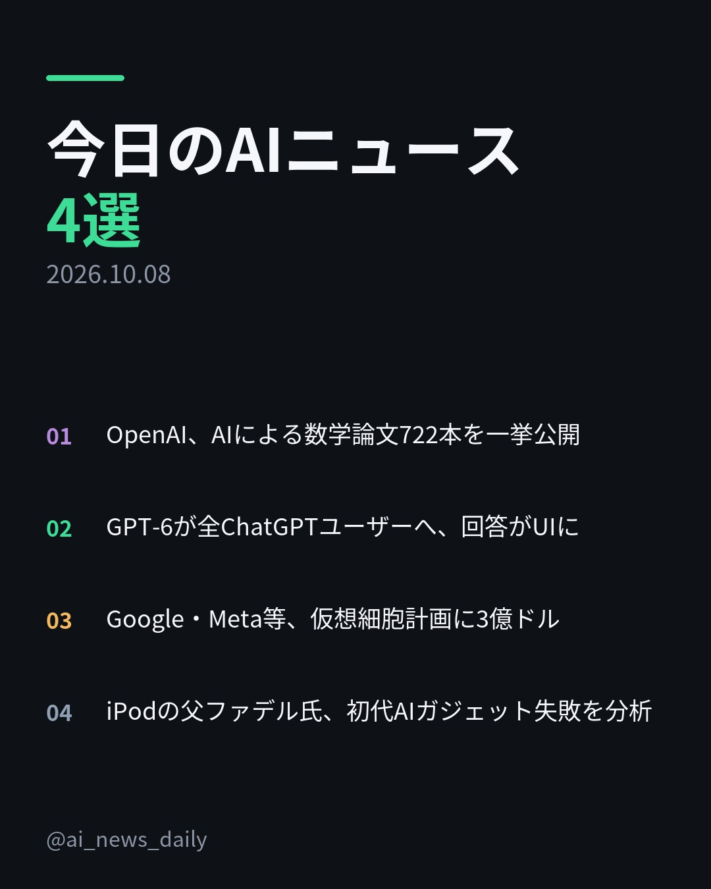
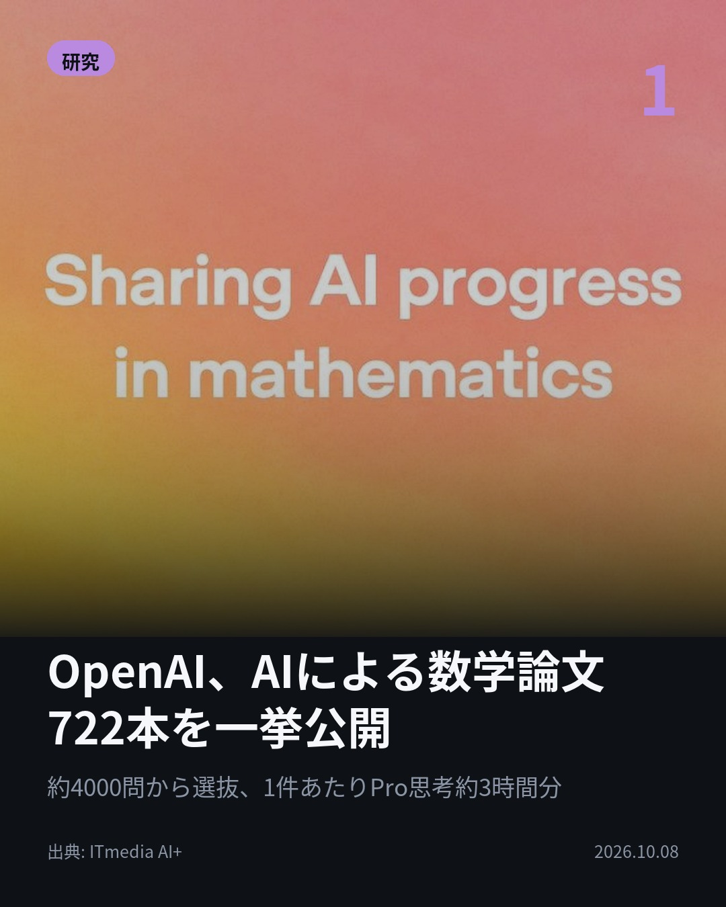
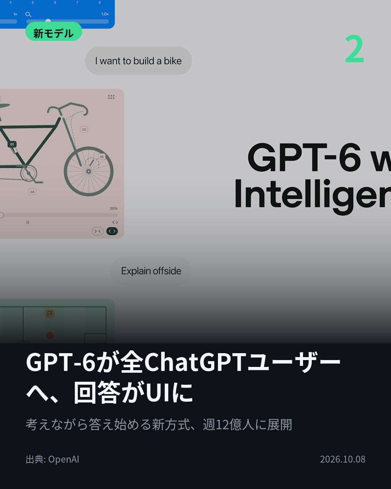
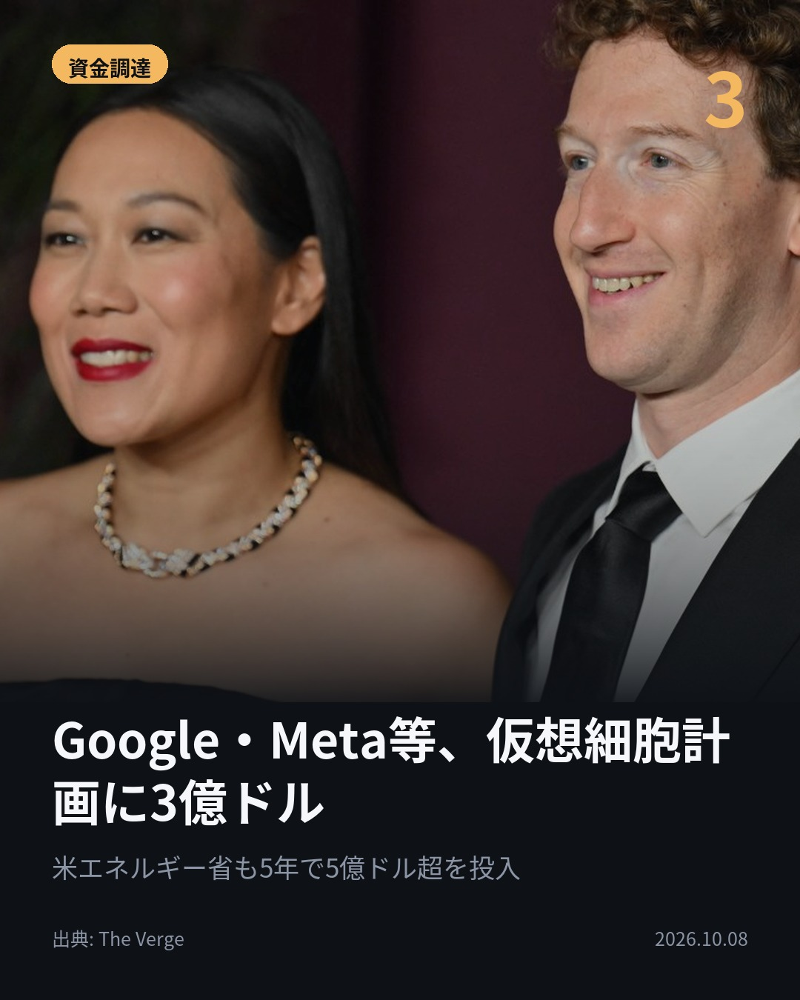
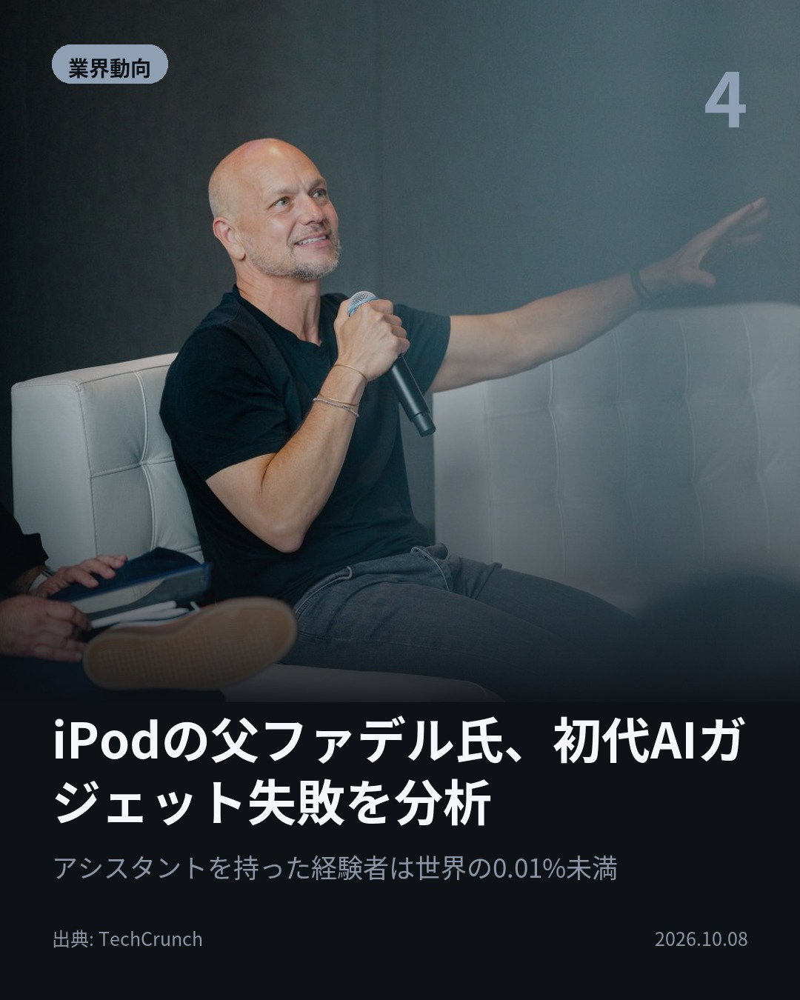

今日のAIニュース 下書き
2026-10-08 生成 10/08 08:44
⚠ ファクト照合で要確認の項目があります。
各ニュースの警告を確認してから投稿してください。
X（4投稿）
OpenAI、AIによる数学論文722本を一挙公開
原題: OpenAI、社内AIがリーマン予想の関連難問を証明と主張 論文722本をGitHubで公開

社内AIが生んだ数学の原稿、722本。 OpenAIが社内モデルの成果をGitHubで公開。 約4000問から絞り込み、1件平均でChatGPT Pro思考約3時間分の計算量。 多くはLeanの形式証明付き。 #AI #OpenAI（出典: ITmedia AI+）
重み 200 / 280（見た目 129字）

GPT-6が全ChatGPTユーザーへ、回答がUIに
原題: GPT-6 and Intelligent UI for everyone

ChatGPTの答えが「画面」になる。 GPT-6の新モデルを週12億人超の利用者へ。 新機能Intelligent UIで、回答に図やボタン、フォームが並ぶ。 割り勘ツールもその場で作る。 考えながら答え始める方式も導入。 #生成AI #ChatGPT（出典: OpenAI）
重み 225 / 280（見た目 134字）
要確認:
［数値］12億 — この数値の根拠が本文に見つかりません
［固有名詞］フォーム — この語が本文に見つかりません
［固有名詞］ロードトリップ — この語が本文に見つかりません

Google・Meta等、仮想細胞計画に3億ドル
原題: Google invests millions in Mark Zuckerberg’s efforts to create a ‘virtual cell’
実験をデジタル上でできたら？ Google DeepMind、Meta、Isomorphic Labsが計3億ドルを、Biohubの「仮想細胞」計画に投資。 米エネルギー省も5年で5億ドル超を投じる。 #AI #Biohub（出典: The Verge）
重み 186 / 280（見た目 124字）
要確認:
［数値］3億 — この数値の根拠が本文に見つかりません
［数値］5年 — この数値の根拠が本文に見つかりません
［数値］5億 — この数値の根拠が本文に見つかりません
［数値］18億 — この数値の根拠が本文に見つかりません
［固有名詞］デジタル — この語が本文に見つかりません
［固有名詞］エネルギー — この語が本文に見つかりません
［固有名詞］データセット — この語が本文に見つかりません
［固有名詞］NIH — この語が本文に見つかりません
［固有名詞］Verge — この語が本文に見つかりません

iPodの父ファデル氏、初代AIガジェット失敗を分析
原題: Tony Fadell on why the first wave of AI gadgets failed — and what comes next

壇上に映された、販売終了したAI端末3つ。 iPodの父トニー・ファデル氏は、Rabbit R1などを「何のニーズも満たさなかった」と指摘。 人間のアシスタントを持った人は世界の0.01%未満とも。 #AI #AIガジェット（出典: TechCrunch）
重み 213 / 280（見た目 125字）
要確認:
［固有名詞］ファデル — この語が本文に見つかりません
［固有名詞］アシスタント — この語が本文に見つかりません
［固有名詞］エージェント — この語が本文に見つかりません
［固有名詞］プライバシー — この語が本文に見つかりません
［固有名詞］オンデバイス — この語が本文に見つかりません
［固有名詞］TechCrunch — この語が本文に見つかりません

Instagram（カルーセル 6枚）


1. 表紙


2. ニュース


3. ニュース


4. ニュース


5. ニュース

6. CTA
1件あたりChatGPT Proの思考約3時間分。AIが生んだ数学の原稿722本が公開されました。 今日はOpenAIの大型発表2本と、仮想細胞・AIガジェットの話です。 1. OpenAIは評価中に社内モデルへ約4000問を与え、一定の重要性を満たす成果を722本に絞ってGitHubで公開。多くにLean（証明を機械で検証する仕組み）の形式証明が付きます。助言した数学者団体AGMAIは、社内モデルで試す慣行自体には反対の立場です。(ITmedia AI+) 2. Intelligent UIは、質問に合わせて回答の形式を選ぶ機能。ロードトリップの経由地を地図に、貯金の伸びを計算ツールにして返します。推論の途中でも答え始められるようになりました。(OpenAI) 3. 計3億ドルの投資は、総額18億ドルの「Virtual Biology」構想の一部。米国立衛生研究所（NIH）も、5億ドル超の過去の連邦投資から生まれたデータセットなどを提供します。(The Verge) 4. ファデル氏は「多くの消費者はアシスタントが何かも知らない」と指摘。成功するAIエージェントは、プライバシーと軽さのためにオンデバイス処理だけで動く必要があると予測しました。(TechCrunch) 数学の成果の検証、AI端末への信頼。AIの成果をどう確かめ、どう任せるかが並んだ1日でした。 毎朝4本、AIニュースを原文から要点だけまとめています。見返せるよう保存して、続きはフォローでチェックしてください。 #AI #生成AI #人工知能 #テクノロジー #AIニュース #ChatGPT #OpenAI #GPT6 #AI活用 #AI研究 #数学 #形式証明 #IntelligentUI #GoogleDeepMind #Meta #IsomorphicLabs #Biohub #仮想細胞 #バイオテクノロジー #AIガジェット #TonyFadell #TechNews
840字（Instagram上限 2,200字）
この日の選定理由
OpenAI、AIによる数学論文722本を一挙公開
AIによる数学研究が、数件の成果からまとめて量産する段階に入ったことを示しています。一方で数学者団体は社内モデルで試す慣行そのものに反対しており、成果の検証の仕方が問われます。
GPT-6が全ChatGPTユーザーへ、回答がUIに
チャットの回答が文章から、図やフォーム、その場で作るツールへと変わり始めました。週12億人が使う画面の体験が根本から変わる可能性があります。
Google・Meta等、仮想細胞計画に3億ドル
競合するテック企業と米政府が、細胞をAIで再現する計画で手を組みました。実験をデジタル上で行う創薬研究が国家規模で動き出しています。
iPodの父ファデル氏、初代AIガジェット失敗を分析
Rabbit R1やHumane Ai Pinが失敗した理由を「解決すべき課題がなかった」と明快に説明しています。AIエージェントの普及には信頼とオンデバイス処理が鍵だという見方を示しました。